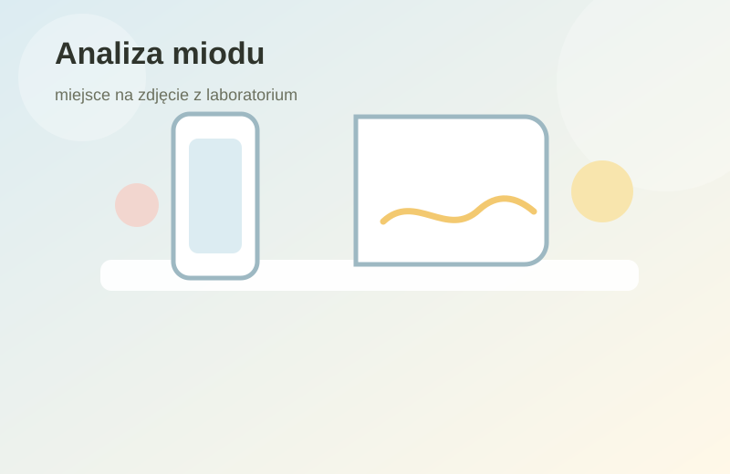
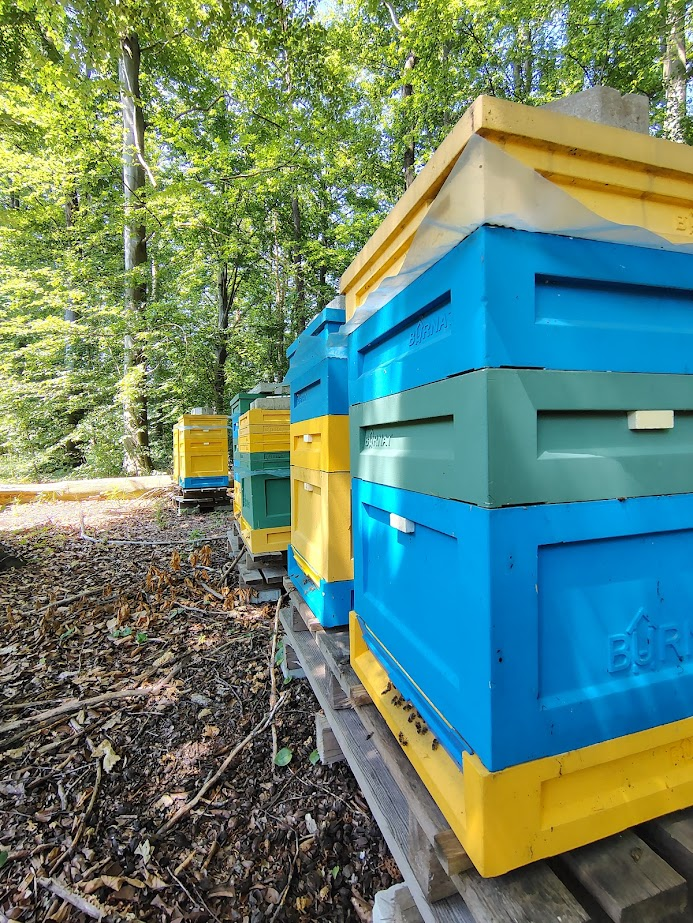
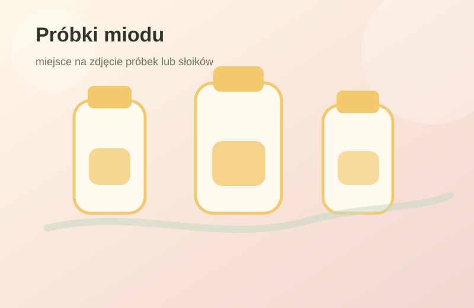
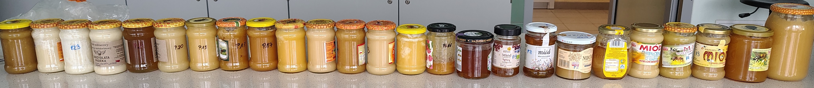
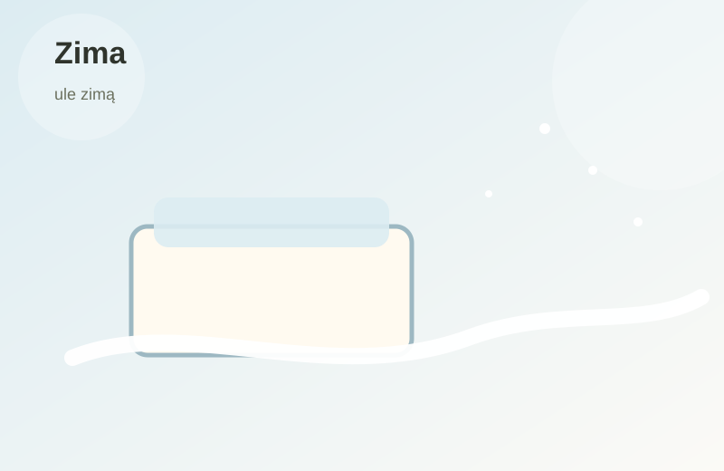

Analiza miodu
W pracy zawodowej zajmuję się m.in. oceną składu i jakości żywności. Wybrane badania miodu mogą obejmować oznaczenia wykonywane metodami chromatograficznymi i spektroskopowymi.
Niewielka pasieka prowadzona z pasją
Pasieka Pustułka to kameralna pasieka położona w otoczeniu lasu i okolicznych pożytków. Nie jest przedsięwzięciem nastawionym na masową produkcję miodu. Powstała z podziwu dla pszczół, ciekawości przyrody i potrzeby pracy w rytmie sezonu.

O pasiece
Pasieka Pustułka powstała z pasji do przyrody i pszczelarstwa. Pszczoły fascynują mnie nie tylko jako producenci miodu, ale przede wszystkim jako niezwykle zorganizowane i ważne dla środowiska owady.
Nie dążę do maksymalizacji produkcji. Najważniejsze są dla mnie zdrowe rodziny pszczele, poszanowanie naturalnego cyklu ich rozwoju oraz jakość pozyskiwanego miodu. Miód jest efektem ubocznym dobrej opieki nad pszczołami, a nie celem osiąganym za wszelką cenę.
Pasieka znajduje się w otoczeniu lasu „Pustułka” i okolicznych pól, dzięki czemu pszczoły korzystają z różnorodnych pożytków. To miejsce sprzyja obserwacji przyrody i prowadzeniu pasieki w niewielkiej, spokojnej skali.
Jakość i doświadczenie
Pszczelarstwo jest moją pasją, którą rozwijam praktycznie, prowadząc własną pasiekę, oraz zawodowo, zajmując się analizą żywności. Jestem technikiem pszczelarzem, a od ponad 20 lat pracuję w obszarze analizy żywności w Instytucie Technologii i Analizy Żywności Politechniki Łódzkiej. W pracy naukowej zajmuję się również badaniami dotyczącymi jakości miodu.
To doświadczenie pomaga mi patrzeć na miód nie tylko jak na tradycyjny produkt pszczeli, ale także jak na żywność, której jakość zależy od pochodzenia, sposobu pozyskania, przechowywania i uczciwej informacji przekazywanej odbiorcy.

W pracy zawodowej zajmuję się m.in. oceną składu i jakości żywności. Wybrane badania miodu mogą obejmować oznaczenia wykonywane metodami chromatograficznymi i spektroskopowymi.

Na stronie unikam przesadnych obietnic zdrowotnych. Wolę prosty opis pochodzenia, sezonowości, cech miodu i zasad jego właściwego przechowywania.

Miody
W małej pasiece ilość miodu jest ograniczona, a jego charakter zależy od pogody, terminu kwitnienia roślin i siły rodzin pszczelich. Dlatego dostępność poszczególnych miodów może zmieniać się z roku na rok.
Miód o zróżnicowanym, sezonowym charakterze. Jego smak i aromat zależą od roślin kwitnących w okolicy pasieki w danym okresie.
Dostępność: sezonowa
Miód pozyskiwany wtedy, gdy warunki pogodowe pozwolą pszczołom dobrze wykorzystać pożytek lipowy. Zwykle ma wyraźniejszy aromat i charakterystyczny smak.
Dostępność: zależna od roku
W zależności od sezonu mogą pojawić się miody o odmiennym profilu pożytkowym. Informację o aktualnej dostępności najlepiej potwierdzić bezpośrednio.
Dostępność: zapytaj
Galeria
Pszczelarstwo uczy cierpliwości i obserwacji. Każda pora roku w pasiece wygląda inaczej: od wiosennego rozwoju rodzin, przez letnie pożytki, po jesienne przygotowanie do zimy i zimowy spokój uli.

Ciekawostki
W tej części można zamieszczać krótkie informacje o miodzie, pszczołach i jakości produktów pszczelich. Chcę łączyć doświadczenie pszczelarskie z wiedzą z zakresu analizy żywności, unikając przesadnych obietnic i uproszczeń.
Krystalizacja jest naturalną cechą wielu miodów. Jej szybkość zależy m.in. od składu cukrów, temperatury przechowywania i pochodzenia nektaru.
Zapytaj o aktualny miódHMF, czyli 5-hydroksymetylofurfural, jest związkiem, którego zawartość w miodzie może wzrastać podczas ogrzewania lub długiego przechowywania. Dlatego bywa oznaczany jako jeden ze wskaźników jakości miodu.
Zobacz sekcję jakościMiód najlepiej przechowywać szczelnie zamknięty, w suchym i zacienionym miejscu, z dala od źródeł ciepła. Nie wymaga lodówki.
Masz pytanie?Kontakt
Ilość miodu z małej pasieki jest ograniczona, dlatego dostępność najlepiej potwierdzić bezpośrednio. Chętnie odpowiem także na pytania dotyczące pasieki, pochodzenia miodu i sposobu jego przechowywania.